An automated eating apparatus for a quadriplegic patient.
A year-long senior capstone with a team of four. We built a fully working prototype for about $150, compared to commercial robotic feeding arms that cost $5,000 to $10,000, and represented Rose-Hulman and the USA at the E²Festa in South Korea.
Our team of four developed an automated eating apparatus for a quadriplegic patient. Our client, Mr. Gary Wallace, met with an accident that left him quadriplegic, with very limited movement in all four limbs. He required assistance with every daily task, including eating meals three times a day. We created a fully operating prototype that cost about $150 to develop, compared to other robotic arm devices on the market for the same task that cost $5,000 to $10,000.
The work was divided across three quarters of the academic year: Fall, Winter, and Spring. Over that year we built three prototypes, each one addressing the shortcomings of the last.
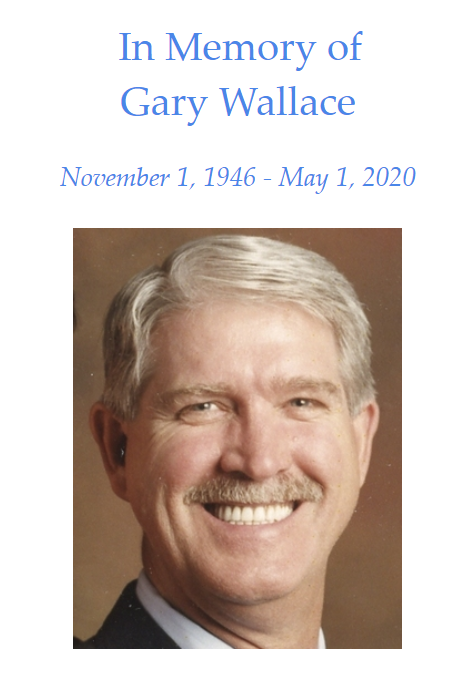
Fall quarter
To approach the problem, our team fabricated a first prototype. We wanted a device that is easy to assemble, clean, and transport, so we built one with individual spoons attached to a rotating base and raised by a linkage system, with an electromagnet to catch a spoon and bring it to the user's mouth.
The spoons are detachable, so different foods can be placed on each one. The housing holds the electronics: an Arduino MEGA, a stepper motor to rotate the spoons to the correct positions, a second stepper motor with a lead screw driving the linkage system, the motor drivers, and the wiring.
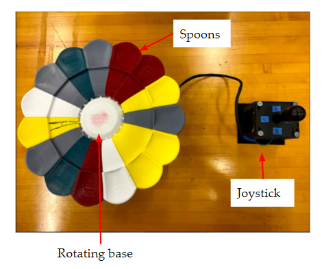
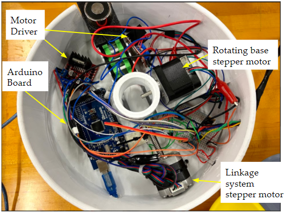
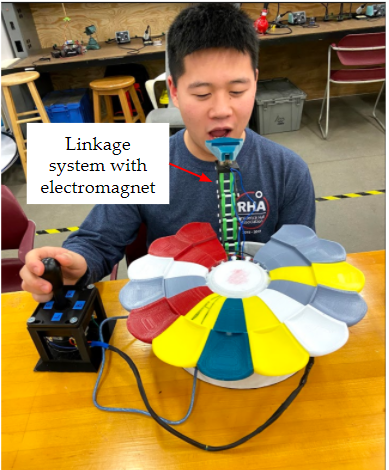
Our team was selected to represent Rose-Hulman and the USA at the Capstone Design Competition at the E²Festa in South Korea, the largest engineering festival in the country. We placed 10th while competing with hundreds of teams, and were recognized for our unique design and the prototype's low production cost of around $80.
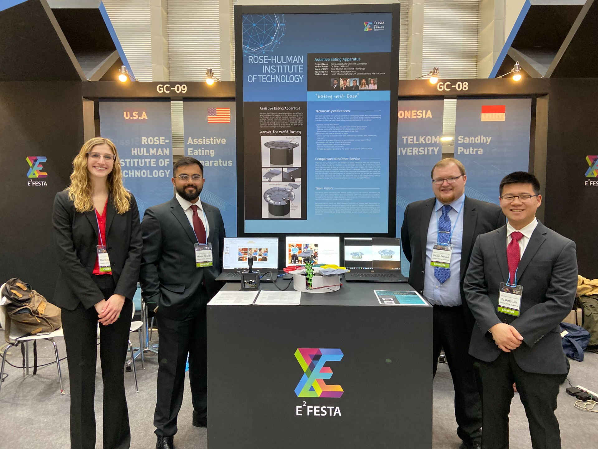
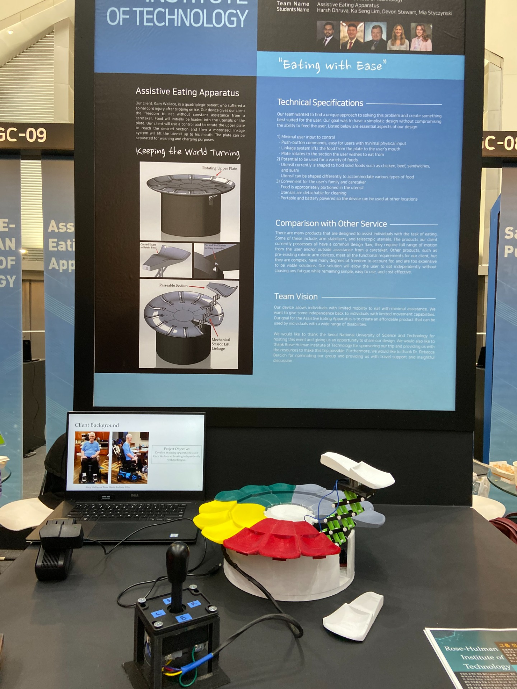
Winter quarter
For the second prototype we upgraded the rotating mechanism and made the spoons easier to remove by attaching them magnetically, rather than seating them in pre-defined slots. We redesigned the spoon to hold roughly as much food as an average person eats off a plate, updated the housing, and fabricated aluminum links for more stability in the mechanism.
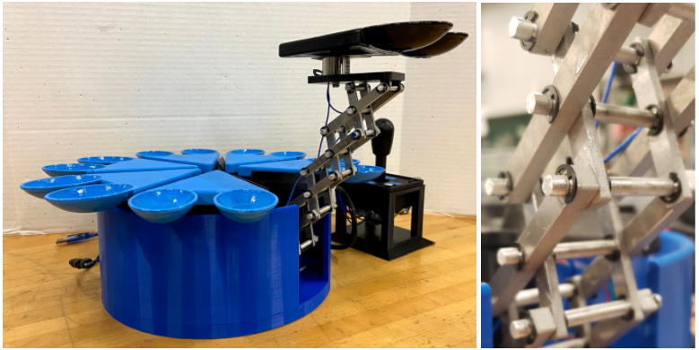
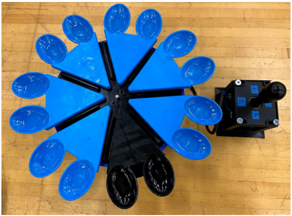
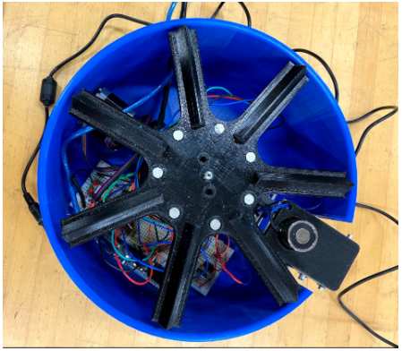
Spring quarter
For the final prototype, we switched from a stepper motor with a lead screw to a linear actuator, giving the linkage system more power to actuate. We swapped the joystick for a smaller analog joystick that mounts to the client's chair so it can be used with ease.
We added a limit switch with a roller for precise spoon positioning, and a cover to keep food out of the housing that held the electronics. The final prototype used a new spoon design with three spoon heads, reducing the total number of spoons, and adjustable legs to handle the different table heights around the client's home.
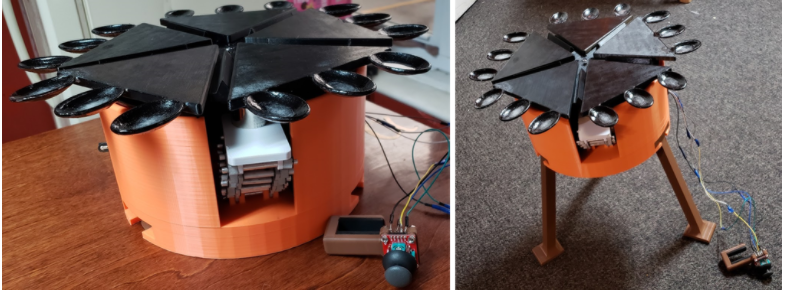
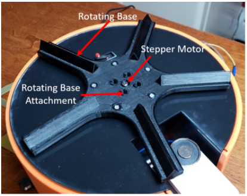
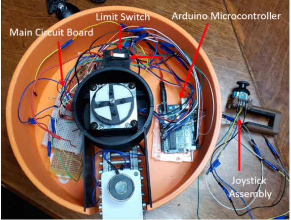
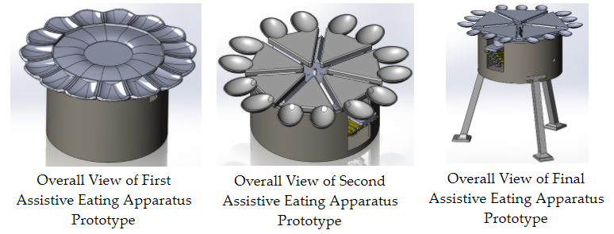
Reflection
Overall, we succeeded in building a working prototype that explores an alternative way to eat. Because of COVID-19 during the final quarter, we weren't able to add and optimize several features that would have improved the design. Sadly, our client passed away right before we completed the final prototype. With more research and development, I believe this approach could help many people living with paralysis who need assistance with one of the most important activities in life: eating.
Work pack
The link below is a work pack for the final prototype, containing a parts list, part descriptions, engineering drawings, assembly instructions, and the project code.
Gary Wallace